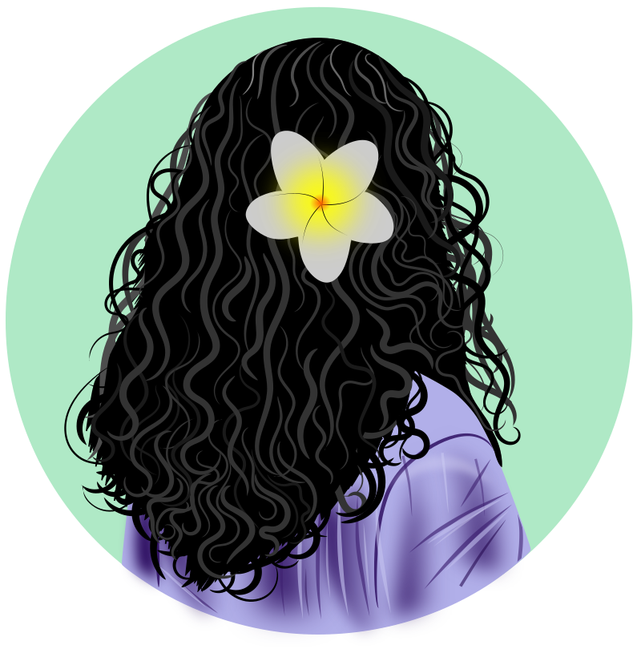

Hello and welcome! My name is Sythong (pronounced: see-tong). I'm a graduate student in anthropology, I explore with data science on the side, and I spend a lot of time photographing plants and insects--which is to say most of what I like to do comes down to paying close attention to things other people tend to overlook.
That's what drew me to anthropology. So much of it is about taking the mundane (the habits and small moments people move past without a second thought) and looking at them long enough that they turn strange and interesting again.
Lately I've noticed that I mostly write for myself. I keep coming back to Toni Morrison's idea that you should write what you want to read, and I take it fairly literally. A lot of what's here is what I wish I'd understood or thought about earlier, written down for my own sake. But the many personal notes often turn out to be useful to other people too, so I'm leaving them somewhere they can be read.
As for what you'll find: a projects section with write-ups of what I've been working on/building; reviews of books and other things I've been reading and watching; and a blog, which is a looser space for whatever I feel like thinking through--passing insights, half-formed ideas, and whatever has my attention at the moment.
Thank you for stopping by. I hope you find something worth your time.